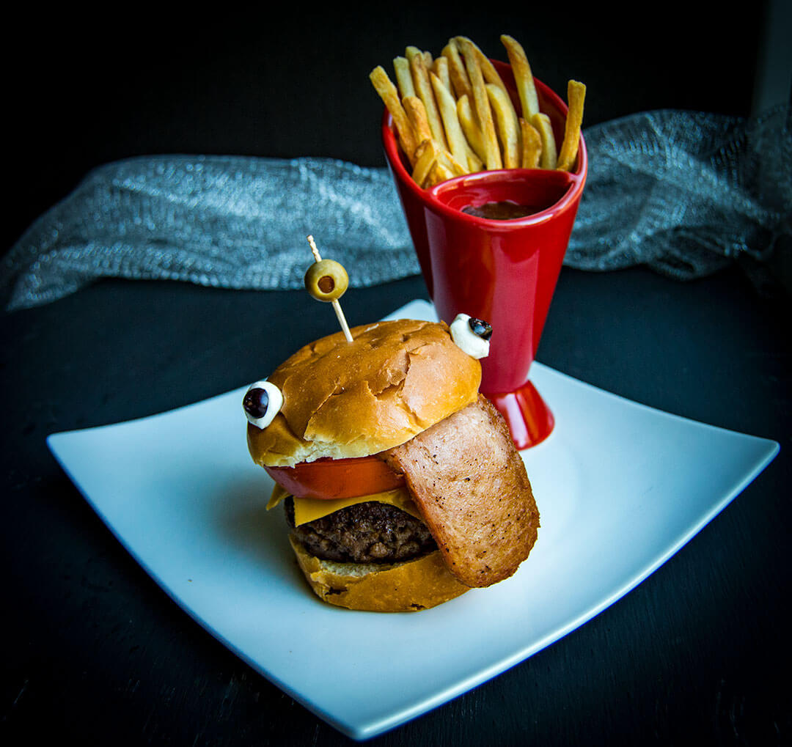

A goofy looking burger, designed to have facial features inspired by Fortnite
Recipe from thestarvingchefblog.com
Ingredients
- 16 oz ground beef
- 2 tablespoons sea salt
- 1 teaspoon pepper
- 1 can of Spam, sliced
- 2 tomato slices
- 2 slices American cheese
- 4 mozzarella pearls
- 4 black olives sliced
- 2 green olives with filling pimento olives
Steps
- In a large bowl, stir the salt and pepper into the ground beef. Form the beef into two half-pound patties, about an inch thick.
- Use a cast iron or flat top iron skillet over medium-high heat to sear the burgers until a golden crust has formed on each side. Cook the burgers until they reach your desired doneness, about 5-8 minutes per side.
(Rare: 120-125°F | Medium Rare: 130-135°F | Medium Well: 145-150°F | Well-done: 155-160°F)
- Remove the cooked patties from the skillet but leave the grease behind. Let the burgers rest for about 8-10 minutes.
- Top the patties with two slices of American cheese and a thick slice of tomato. Place the Spam so that it hangs off the side of the burger like a tongue.
- Slice the black olives thin and then attach the slices to small mozzarella pearls so that they look like eyes. Skewer the mozzarella with the toothpick and affix to the top sides of the burger bun.
- Serve with french fries and a variety of your gamer's favorite toppings. Enjoy!
Home